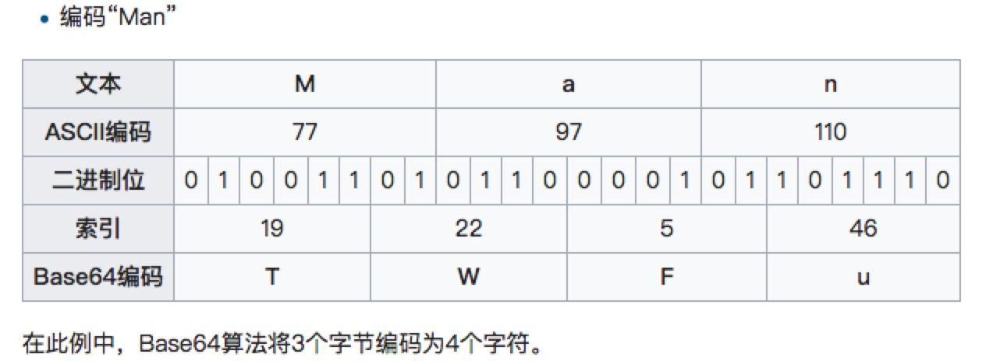

互联网安全基础
加密算法
BASE64
- 效率高
- 防止明文，可逆,信封
- 长度增加4/3

散列算法
- MD5
- SHA1
- SHA2（SHA-224、SHA-256、SHA-384、SHA-512、SHA-512/224、SHA-512/256）
- SHA3
- 摘要,散列算法
- 单向函数，不可逆
- 指纹签名
- 防明文（密码等）
for each 512-bit chunk of message
break chunk into sixteen 32-bit little-endian words w[i], 0 ≤ i ≤ 15
//Initialize hash value for this chunk:
var int a := h0
var int b := h1
var int c := h2
var int d := h3
//Main loop:
for i from 0 to 63
if 0 ≤ i ≤ 15 then
f := (b and c) or ((not b) and d)
g := i
else if 16 ≤ i ≤ 31
f := (d and b) or ((not d) and c)
g := (5×i + 1) mod 16
else if 32 ≤ i ≤ 47
f := b xor c xor d
g := (3×i + 5) mod 16
else if 48 ≤ i ≤ 63
f := c xor (b or (not d))
g := (7×i) mod 16
temp := d
d := c
c := b
b := leftrotate((a + f + k[i] + w[g]),r[i]) + b
a := temp
Next i
//Add this chunk's hash to result so far:
h0 := h0 + a
h1 := h1 + b
h2 := h2 + c
h3 := h3 + d
End ForEach
DES，3DES,AES
- 对称加密
- 算法公开、计算量小、加密效率高。
AES
- AddRoundKey—矩阵中的每一个字节都与该次回合密钥（round key）做XOR运算；每个子密钥由密钥生成方案产生。
- SubBytes—通过一个非线性的替换函数，用查找表的方式把每个字节替换成对应的字节。
- ShiftRows—将矩阵中的每个横列进行循环式移位。
- MixColumns—为了充分混合矩阵中各个直行的操作。这个步骤使用线性转换来混合每内联的四个字节。最后一个加密循环中省略MixColumns步骤，而以另一个AddRoundKey取代。
link: https://zh.wikipedia.org/wiki/%E9%AB%98%E7%BA%A7%E5%8A%A0%E5%AF%86%E6%A0%87%E5%87%86
RSA
- 非对称加密算法
- 效率低下
- 私钥、公钥
数学原理
- 互质数
欧拉函数，欧拉定理

模反元素

- 公开密钥n、e的生成：随机选取两个质数p1、p2，n=p1*p2，再随机选取一个整数e，e与φ(n)互质。
加密 (m^e) mod n=c，其中m为原信息，c为加密信息，n、e为公开密钥
解密 (c^d) mod n=m
这种算法非常可靠，密钥越长，它就越难破解。根据已经披露的文献，目前被破解的最长RSA密钥是768个二进制位。也就是说，长度超过768位的密钥，还无法破解（至少没人公开宣布）。因此可以认为，1024位的RSA密钥基本安全，2048位的密钥极其安全。
情景一
小明拥有公钥和私钥。小红给小明写情书，用公钥加密。这封信只有小明能看，反之亦然。
情景二
小明给小红写信，加上了一个签名，生成信件的摘要（digest),摘要用私钥加密，小红可以用公钥打开摘要，可以查看信件是否被篡改。
情景三
小刚很嫉妒，偷偷在小红电脑上，用自己的公钥替换了小明的公钥，小刚就能偷偷给小红写信了，而小明的信件送不到小红手上。......直到小明去申请了一个证书。
CA，证书
X.509 标准证书
- csr
- p12(pkcs)
- pem
- der
- crt
- cer

HTTPS
- 对称算法传输数据
- 非堆成加密key
- 不是银弹
数字签名
摘要算法 + 非对称算法
约定token --- sign = base64（content + token） sign = md5(base64（content + token） + token)
认证和会话
几个概念
- 认证：认出用户是谁
- 授权：决定用户能做什么。
- 凭证：达到认证目的。
- Authentication Authorization Credential
有一间屋子，持有钥匙的人可以开门进入屋子。
认证：开门的过程就是认证的过程
授权：干啥都行～
凭证：钥匙。
被用于认证,开门的过程，对应互联网中的登陆
持有钥匙的人就是主人吗？
钥匙会丢
有人造了一吧同样的钥匙
安全本质是信任的问题
认证
认证就是验证凭证的过程
- 单因素凭证
- 双因素凭证
- 多因素凭证
- 多因素凭证 vs 用户体验
授权
session使用方式
- 每次传输账号密码
- session 加密 > cookie
- session 保存在服务端 ，sid-> cookie
- 保存在url（sid）
session 攻击
- session fixation
- session保持攻击
- xss
- crsf
- arp欺骗
- 伪装CA
- 。。。。
session安全策略
- session过期
- 单点
- ip、ua等变化了，强制销毁等
- 多因素凭证
- 浏览器指纹
- 。。。。。。。
OAuth
略
安全世界观，安全三要素
- Confidentiality--机密性
- 数据内容不能泄漏，加密是实现机密性的常见手段
- Integrity--完整性
- 数据内容不能泄漏，加密是实现机密性的常见手段
- 类比信封，封面等
- Integrity--完整性
- 保护数据内容是完整的，没有被篡改的，常见的手段是数字签名
- Availability--可用性
- 保护资源的可用性，随需要可得，随需要扩展。
- eg:停车场,DDOS,CC等
安全三要素，是设计安全方案时的三个基本出发点
- 可审计性
- 不可抵赖性
- 运维监控
- 保险
- 权限
- 人员掌控
- 等等
安全评估
资产划分->威胁分析->风险分析->确认解决方案
面对一个尚未评估的系统，上一个阶段将决定下一个阶段的目标，需要实施到什么程度。
资产划分
- 固定资产(服务器、网络、数据库、中间件等)
- 数据
划分信任边界！
威胁分析
STRIDE
| 威胁 | 定义 | 安全属性 |
|---|---|---|
| Spoofing--伪装 | 冒充他人身份 | 认证 |
| Tampering--篡改 | 修改数据或代码 | 完整性 |
| Repudiation--抵赖 | 否认做过的事情 | 不可抵赖性 |
| InformationDisclosure--信息泄漏 | 机密信息泄漏 | 机密性 |
| Denial of service--拒绝服务 | 拒绝服务 | 可用性 |
| Elevation of Privilege--提升权限 | 未经许可获得许可 | 授权 |
没有预测到的风险
风险分析
Risk = Probability * Damage Potential
| 等级 | 高3 | 中2 | 低1 |
|---|---|---|---|
| Damage Potential | 获取完全验证权限；执行管理员操作；非法上传文件等 | 泄漏敏感信息 | 泄漏其他信息 |
| Reproducibility | 攻击者可随意再次攻击 | 攻击者可以重复攻击，但有时间限制 | 攻击者很难重复攻击过程 |
| Exploitability | 初学者在短期内能掌握攻击方法 | 熟练的攻击者 | 漏洞利用条件苛刻 |
| Affected user | 所有用户，默认配置，关键用户 | 部分用户，非默认配置 | 极少数用户，匿名用户 |
| Discoverability | 漏洞明显，攻击条件容易 | 私有区域，部分人能看到 | 发现漏洞条件苛刻 |
高危：12～15 中危：8～11 低危：0～7
确认方案
安全是产品的一种属性
- 能够有效解决问题；{:&.rollIn}
- 用户体验好；
- 高性能；
- 低耦合
- 易于扩展和升级。
owasp评估法
OWASP：http://www.owasp.org.cn/owasp-project/download/OWASPRiskRatingMethodologyV2.pdf
完